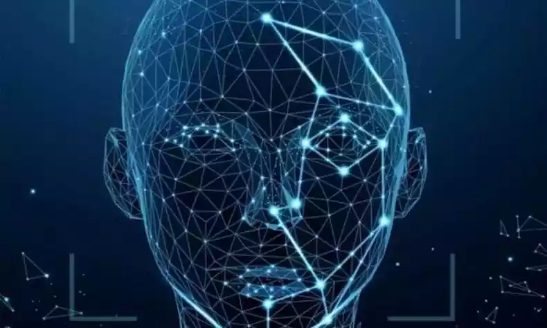

Inteligência Artificial
A inteligência artificial (IA) é uma área da computação que se dedica à criação de sistemas capazes de realizar tarefas que, quando feitas por humanos, geralmente requerem inteligência.
Esses sistemas são projetados para aprender, raciocinar, perceber e interagir com o ambiente, tornando-se cada vez mais avançados e presentes em diversas áreas.

Como surgiu a inteligência artificial?
A ideia de uma máquina que "pensa” nasceu com o matemático e criptógrafo Alan Turing, mas a linha do tempo das inteligências artificiais é um tanto complexa. O estudioso ficou conhecido pelo Teste de Turing, um exame desenvolvido em 1950 e que pretendia descobrir se um computador conseguiria demonstrar a mesma inteligência de uma pessoa. No entanto, o termo “Inteligência Artificial” apareceu apenas em 1956 com John McCarthy, quando o cientista estadunidense inventou a linguagem de programação Lisp — que abriria as portas para o desenvolvimento da IA.
No mesmo ano, os pesquisadores Allen Newell, JC Shaw e Herbert Simon criaram o Logic Theorist, considerado por muitos o primeiro software de inteligência artificial em execução. Ele foi desenvolvido para imitar os processos cerebrais de matemáticos humanos para provar teoremas da matemática.
Como funciona a inteligência artificial?
A inteligência artificial é capaz de "aprender" devido às instruções presentes no código do seu programa, ou seja, são os algoritmos que determinam os conhecimentos que a IA deve ou não adquirir. A tecnologia é exposta a milhares de padrões para que consiga reconhecer elementos e, assim, lidar com diferentes situações com autonomia. No caso de uma IA que joga xadrez, por exemplo, ela será exposta a inúmeros dados de partidas, jogadas e e resultados para que consiga pensar "como um humano" e decidir qual peça mover.
Em outras palavras, a capacidade de “pensar” é definida pela velocidade de análise de dados e pela programação dos algoritmos. Dentro desse processo, há dois tipos de aprendizagem: o machine learning (aprendizado de máquina) e o deep learning (aprendizado profundo). O aprendizado de máquina adquire conhecimentos por meio da coleta, da organização e da categorização de um conjunto de dados. Com ele, a IA consegue interpretar as informações para tomar decisões e executar tarefas de forma automática e autônoma.
O aprendizado profundo, por outro lado, é um avanço do aprendizado de máquina, já que essa tecnologia simula as redes neurais em um processo semelhante ao da inteligência humana. Nesse formato, o sistema consegue hierarquizar e compreender as informações de forma mais complexa e aprofundada. Com ele, a IA é capaz de aprender sem a necessidade de tanta interferência humana e reconhecer de forma mais assertiva imagens e falas.

Quais são os tipos de inteligência artificial?
É possível classificar as inteligências artificiais em três tipos: inteligência artificial estreita (ANI), inteligência geral artificial (AGI) e superinteligência artificial (ASI). Além dessa classificação nominal, elas também são divididas entre os grupos "IA fraca" e "IA forte". No campo da IA fraca, a representante é a inteligência artificial estreita (ANI). Esse tipo de IA se refere a sistemas treinados para cumprir uma única tarefa específica, como pilotar um veículo, pesquisar na Internet ou jogar xadrez.
Já no que se refere à IA forte, há a inteligência geral artificial (AGI) e a superinteligência artificial (ASI). A AGI é focada em simular a inteligência humana, com capacidade de resolver várias tarefas diferentes, tomar decisões, resolver problemas e planejar o futuro. Ela também é capaz de adquirir conhecimentos a partir de experiências e entender estímulos diretos e indiretos — ou seja, reconhecer e distinguir elementos mais subjetivos, como a diferença entre um rosto feliz ou triste.
Já a ASI tem como foco superar a capacidade de inteligência do cérebro humano. A superinteligência artificial (ASI) é uma tecnologia ainda em desenvolvimento no mundo científico e, com ela, seria possível resolver cálculos complexos e humanamente impossíveis.
Exemplos de inteligência artificial no cotidiano
A evolução tecnológica vivenciada pela humanidade nas últimas décadas proporcionou a incorporação cada vez maior da inteligência artificial na vida cotidiana. Veja, a seguir, alguns exemplos de como diferentes modelos de IA se fazem presentes.
Assistentes de voz: presentes em celulares e dispositivos como caixas de som inteligentes (smart speakers), os assistentes são um modelo de IA que reconhece e executa comandos feitos por meio da voz, como realizar ligações, programar alarmes, dar informações, tocar música e fazer pesquisas online. Os mais famosos assistentes de voz são o Google Assistente (integrado ao sistema Android); Siri, da Apple; e Alexa, da Amazon.
Reconhecimento facial: empregada na confirmação da identidade de uma pessoa ao acessar seus dispositivos pessoais, como smartphones, ou ainda em aplicativos financeiros, como os bancos virtuais. Mais recentemente, o reconhecimento facial tem sido aperfeiçoado para a sua adoção ampla em sistemas de segurança pública.
Redes sociais: os conteúdos das redes sociais que utilizamos todos os dias, como Instagram, Twitter e Facebook, não são apresentados da mesma maneira para todos os usuários. Isso porque existe um algoritmo que analisa os padrões da atividade dos indivíduos e personaliza qual tipo de postagem aparecerá para cada um, de acordo com os seus interesses.
Benefícios da inteligência artificial
O aperfeiçoamento da inteligência artificial revolucionou o campo da informática e a maneira como nos relacionamos com a tecnologia. A IA trouxe uma série de benefícios para a sociedade e para os agentes econômicos, dentre os quais podemos destacar:
- Maior eficácia na tomada de decisões e na execução de tarefas, com maior precisão e menor possibilidade da ocorrência de erros humanos.
- Tem a capacidade de funcionar de maneira ininterrupta e realizar tarefas repetitivas.
- Promove a automação de etapas do processo produtivo nas indústrias e fábricas, o que leva a um aumento da produtividade.
- Resultou em melhorias no processo de compra e venda online, e facilitou o atendimento ao consumidor.
- É responsável por avanços significativos na medicina, tendo introduzido processos inovadores que auxiliaram o trabalho dos médicos e enfermeiros e, além disso, beneficiaram pacientes de maneira direta.
- É cada vez mais útil e presente, como vimos, auxiliando em etapas da nossa rotina, nas comunicações e na realização de tarefas.
Desvantagens da inteligência artificial
Algumas das desvantagens da inteligência artificial caminham lado a lado com os aspectos benéficos dessa tecnologia, como é o caso da automação de tarefas. Veja, a seguir, quais são os principais pontos negativos das IA.
- Apresentam elevado custo de desenvolvimento e implementação, sendo um recurso restrito.
- A automação de tarefas e da tomada de decisões tendem a ocasionar desemprego estrutural.
- Têm avanços limitados mesmo com maior acúmulo de experiência.
- Possibilidade de treinar o algoritmo a repetir padrões e discursos danosos e antiéticos.
- Podem apresentar falhas de controle que implicam risco àqueles que a controlam ou que fazem uso delas, como no caso dos carros autônomos.
- Riscos de segurança com relação à coleta ao armazenamento de dados pessoais, o que suscita intensos debates na sociedade atual.
Clique no botão abaixo para ver um teaser sobre inteligência artificial
Assista ao Vídeo